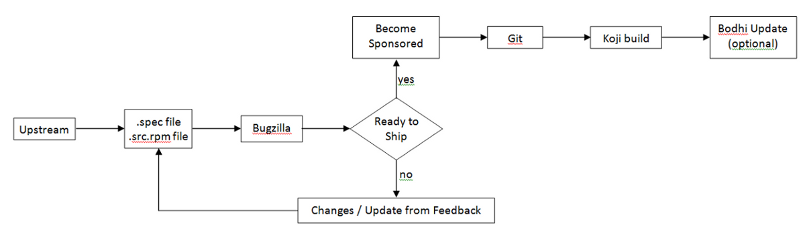
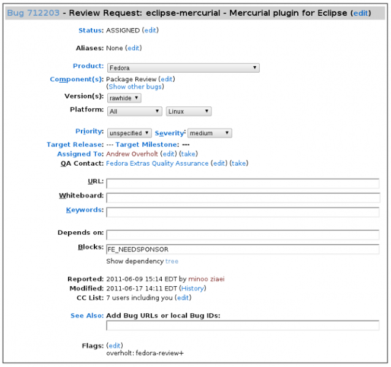
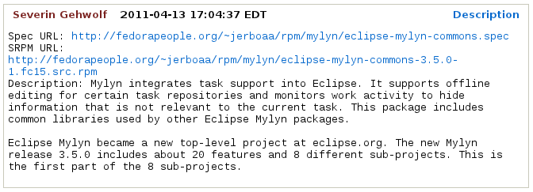
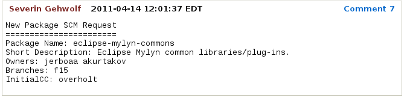
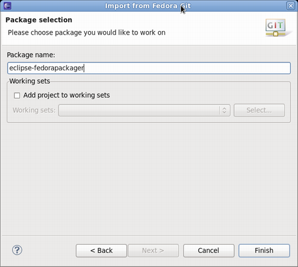

| Getting Started as Maintainer for a New Fedora Package |

|
|

|
| Fedora Packager For Eclipse User Guide |
|
Using Fedora Packager for Eclipse |
Getting Started as Maintainer for a New Fedora Package
If you haven't previously packaged software for Fedora, this guide will lead you through your first package submission.

Creating Account for New Contributors
If you are a new package maintainer:
Creating a new account in Fedora Account System
- First step is to create account in
Fedora Account System (FAS).
- Click
New account and fill in the blanks.
- After you create your account, please be sure to sign the CLA (if you click on the
My Account link in the top right, you should see
CLA: CLA Done).
- Also you need to upload a public
RSA SSH key. You need to use the matching private key to access Fedora machines via SSH.
Creating a Bugzilla Account
Create an account in
Red Hat bugzilla.
- The email address that you use for your bugzilla account should be the same email address as you use in the
Fedora Account System for all things related to fedora packaging.
- To make you work and your bug tracking easier, there is a task management plug-in for eclipse called
Mylyn. You can follow these instructions on
how to integrate your bugizlla account with your mylyn plug-in in eclipse.
Initial Setup
This step is only required to be completed once for a new Fedora packager or if using a new machine that does not have the required FAS certificates set up. When it is certain this is correct it is safe to skip this step. The following explains how to set up those certificates for an
FAS account.
- First, install the
fedora-packager RPM package:
yum install fedora-packager
- Then run the following command and follow the instructions provided:
fedora-packager-setup
Feel free to
skip the next section if you are an existing maintainer and also know how to create a new software for Fedora.
Making a Package
Packaging Guidlines
Creating an RPM package:
Perform the following steps to create an RPM package:
- Select
File >
New >
Other... from the main menu. Choose
RPM >
RPM Project, click
Next.
- Type the
Project name. Click
Finish.
- Right click on SPECS, select
New >
Other..., choose
RPM >
Specfile Based on a Template, click
Next.
- Fill out the template or accept the default values and customize it based your package specifications. You may use specific templates (e.g. for Perl or Java packages) to create a .spec file stub.
- When your package is ready to submit for review, select
File >
Export from the main munu, choose
RPM >
Source/Binary RPM, click
Next.
- Based on your requirements, select one or both options, click
Finish.
Submiting For Review
Introduce Yourself Using Fedora Mailing Lists
When a new package maintainer joins the Fedora Project, we request that he/she
stays close to upstream. Inform the developers that you are packaging the software by introducing yourself on the
devel@lists.fedoraproject.org.
To sign up for the list, visit the devel list signup page.
- The primary purpose of this is to begin the process of building trust by learning about the package maintainer and increase the chances of your review request being processed sooner.
- The purpose of all this is to break anonymity and foster real-world community within the project. You are under no obligation to reveal personal secrets. The objective is to establish a level of trust with yourself and the other members of the project.
Subject: Self Introduction
Body: Add any information you believe is applicable including past experience, a link to the review request you have filed and a brief description of yourself. You can also post your GPG key information if you want to.
- Here is the information of
possible mailing lists for you to join. And there is also a list of
special interest groups for Fedora Packaging.
Uploading the Package
Upload your SRPM and .spec files onto the Internet somewhere. This can be anywhere accessible by a URL.
- If you need hosting space, please make a note of it in your ticket submission and someone will take care of you.
- If you have already got a Fedora Account then you can use your storage at
<user-name>.fedorapeople.org for this.
Example:
scp path/to/file.spec path/to/rpm-file.src.rpm <user-name>.fedorapeople.org:public_html
file.spec and rpm-file.src.rpm will then be available via the following URLs:
http://<user-name>.fedorapeople.org/file.spec
http://<user-name>.fedorapeople.org/rpm-file.src.rpm
Creating Review Request
Before submitting your request, be sure there is not a previous request for the same package.
Fill out this form in
bugzilla.
- 1. Make sure that you put the name of the package (excluding version and release numbers) in the
Review Summary field, along with a very brief summary of what the package is.
- 2. Put a description of your package (usually, this can be the same thing as what you put in the spec
%description) in the
Review Description field.
- 3- Obtain member sponsorship: If this is your first package, or you are a new maintainer who is updating a package, explain it and say that you need a sponsor (you will need sponsorship to check in and build your package).To be able to get sponsored, you should enter
FE-NEEDSPONSOR into the
Blocks field.
- Sponsorship is not automatic and may require that you further participate in other ways in order to demonstrate your understanding of the packaging guidelines.
- Key to becoming sponsored is to convince an existing sponsor-level member that you understand and follow the project's guidelines and processes.
- For more information check this
How to get sponsored user guide.

- 3. Include the URLs to your SRPM and .spec files.

Bugzilla feedback
- You should get notifications of changes by email. Fix any blockers that the reviewer(s) point out.
Ready to Ship
Follow these steps after your package is approved by reviewers.
Requesting a new package SCM
When the package is approved by the reviewer, request a git module and branches with the info on
Source Code Management(SCM) admin requests.
- Requests that require package administrators approval may be requested through the fedora-cvs flag in Bugzilla tickets. Changing the fedora-cvs flag to
"?" in a Bugzilla report means admin attention is needed.
- Mention the name of the branches you need your package to be included in.

Checking Out the Empty Module from SCM
Once you have the git module, clone your module from git.
- Go to
File >
Import >
Git >
Projects from Fedora Git and enter your package name when prompted. This will clone the desired Git repository. Refer to this user guide on
Using Fedora Git for more information.
- For convenience, the
Git Repositories view will also open once the clone process has finished.

- Here's what the Fedora Git import dialog looks like. Next, specify the package name that will then be prepared for you.

- Since you are cloning your new empty git repository, you will just see the
sources file in your cloned package directory.
Updating the SCM
Importing and Committing the Package Contents
After you have checked out your empty git module, you need to import and commit your package contents into the master branch.
- 1. Right-click on your source files in the SOURCES folder of your local RPM project in Eclipse and click
Copy.
- 2. Right-click on your cloned project from Fedora Git and click
Paste.
- 3. To upload these upstream source files to the lookaside cache, right-click on them, select
Fedora Packager >
Upload this File >
Add to Existing Sources. This adds the files to the list of source files required to build the package. Use
Fedora Packager >
Upload this File >
Replace Sources in order to replace the current content of the
sources file to contain a single line with the MD5 sum of the file selected. More information about the lookaside cache can be found in
this document.
Note!admon/caution|NOTE!| Do not add upstream sources (tar balls, zip files, etc.) to the Fedora Git repository. Use the lookaside cache instead!
- 4. Repeat steps 1-2 for your .spec file in SPECS folder.
- 5. To commit the package contents to the git repository, select the
source file and the
.spec file to commit (alternatively select the Fedora Git project and select desired
unstaged files when the commit dialog is shown), right-click,
Team >
Commit...
- Use this message for your initial commit: "
Initial import (#nnnnnn)" (where nnnnnn is your Bugzilla package review bug number).
Building the Package
Closing the Bugzilla Ticket
- If your package was built successfully, you should close it as
NEXTRELEASE.
Updating Your Package
Once you have built your package locally, you can perform the following steps to update your package:
-
Make locally committed changes public
-
Push the build to Koji
-
Push a Bodhi update (optional)
Continue with
next steps in this user-guide to be able to use all available features of Fedora Packager plug-in.
Enabling Upstream Release Monitoring
Fedora has infrastructure available for monitoring new upstream releases of the software you are packaging.
|
|

|
|
| Fedora Packager For Eclipse User Guide |
|
Using Fedora Packager for Eclipse |